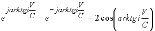

|
В. И. ЕЛИСЕЕВ ВВЕДЕНИЕ В МЕТОДЫ ТЕОРИИ
ФУНКЦИЙ ПРОСТРАНСТВЕННОГО КОМПЛЕКСНОГО ПЕРЕМЕННОГО |
|
10.18. РЕЗУЛЬТАТЫ ОПЫТА МАЙКЕЛЬСОНА ДОКАЗАТЕЛЬСТВО КОМПЛЕКСНОСТИ РЕАЛЬНОГО ПРОСТРАНСТВА.
В 1881 году Майкельсон осуществил знаменитый опыт, с помощью которого он рассчитывал обнаружить движение Земли относительно эфира (эфирный ветер). Схема опыта представлена на рис. Описание опыта стало уже хрестоматийным, поэтому останавливаться на этом не будем. Рассмотрим математическую обработку результатов опыта.
В соответствии со схемой и идеей опыта рассчитывается время прохождения луча света в двух взаимно перпендикулярных направлениях: в продольном по направлению движения прибора вместе с Землей со скоростью и поперечном. Длина обоих направлений L.
Время -это время прохождения луча вдоль прибора в двух направлениях
Решая, систему определим суммарное время прохождения луча света до интерферометра
Одновременно свет проходит дважды гипотенузу (см рис108).
откуда
Расхождение в результатах математической обработки опыта было откорректировано Лоренцем, введением идеи о сокращении протяженности материальных тел в направлении движения
Лоренц ввел коэффициент , где -длина прибора в продольном и поперечном направлениях.
Введение коэффициента до настоящего времени считается искусственной операцией и поэтому результаты опыта ставятся под сомнение и вместе с этим ставятся под сомнения преобразования Лоренца, теория СТО А.Эйнштейна.
Скорость света С является скоростью взаимодействия, существование которой указывает на структуру реального пространства, выявление которой и было задачей и целью проводимого эксперимента. Преобразования Галилея, которое используется в математической обработке эксперимента в виде , в данном случае противоречит самой идеи.
Необходимо использовать преобразования с учетом структуры пространства, а именно
Если скорость прибора становится равной скорости света ,прибор переходит в пространство другого измерения
Повторим расчет с применением комплексной алгебры
Откуда имеем 
Далее и имеем 
Время движения луча света в приборе по направлению движения прибора равно

Разность экспоненциальных функций равна
,
поэтому имеем окончательно
Время движения луча света в поперечном направлении рассчитывается из комплексного треугольника
Таким образом, разница во времени определена коэффициентом , который равен коэффициенту, введенному Лоренцем.
Таким образом, гениальная догадка Лоренца получила математическое подтверждение.
Пространственный комплексный анализ представляет расширение комплексного анализа Коши. Эксперимент Майкельсона проведен независимо от развития представлений о структуре пространства. Совпадение результатов эксперимента с математической обработкой в комплексном пространстве есть доказательство комплексности реального пространства.
Коэффициент Лоренца устанавливает не сокращение размеров прибора по направлению движения, а проекцию этого размера из пространства большего числа измерений в меньшее.
Мини оглавление:
[0], [1.1.1, 1.1.2, 1.1.3, 1.1.4, 1.1.5, 1.1.6, 1.1.7, 1.1.8, 1.2, 1.2.1, 1.2.2, 1.2.2.a, 1.2.2.b, 1.2.2.c, 1.2.2.d, 1.2.2.e, 1.2.2.f, 1.2.2.g, 1.2.2.h, 1.2.3, 1.3.1, 1.3.2, 1.3.3, 1.3.4, 1.3.5, 1.3.6, 1.4.1, 1.4.2, 1.5, 1.6, 1.7.1, 1.7.2, 1.7.3.1, 1.7.3.2, 1.7.3.3, 1.7.4.1, 1.7.4.2, 1.8.1], [2.1, 2.2],[3.1, 3.2, 3.3, 3.4.1, 3.4.2, 3.4.3, 3.4.4, 3.4.5],[4.1, 4.2, 4.3, 4.4],[5.1, 5.1.Рис.52, 5.2, 5.3, 5.4, 5.4.Т1, 5.4.Т2, 5.4.Т3, 5.5.1, 5.5.2, 5.5.3, 5.5.4],[6.1.1, 6.1.2, 6.2.1, 6.2.2, 6.2.3, 6.2.4, 6.2.5, 6.3, 6.4.1, 6.4.2, 6.5.1, 6.5.2],[7.1, 7.2, 7.3, 7.4, 7.5, 7.6, 7.7.1, 7.7.2, 7.8.1, 7.8.2, 7.8.3, 7.9],[8.1, 8.2.1, 8.2.2, 8.3, 8.4, 8.5, 8.6, 8.6.T1, 8.7, 8.8.1, 8.8.2, 8.8.3, 8.9.1, 8.9.2, 8.9.3, 8.10, 8.10.T2, 8.10.T3],[9.1, 9.2, 9.3, Рис.88, 89, 90, 91, 92, 93, 94, 95, 96, 97, 98, 99, 100],[10.1, 10.2, 10.3, 10.4, 10.5, 10.6, 10.7, 10.8, 10.9, 10.10, 10.11, 10.12, 10.13, 10.14, 10.15.1, 10.15.2, 10.16.1, 10.16.2, 10.17, 10.18],[11]
Размещенный материал является электронной версией книги: © В.И.Елисеев, "Введение в методы теории функций пространственного комплексного переменного", изданной Центром научно-технического творчества молодежи Алгоритм. - М.:, НИАТ. - 1990. Шифр Д7-90/83308. в каталоге Государственной публичной научно-технической библиотеки. Сайт действует с 10 августа 1998.
E-mail: mathsru@gmail.com